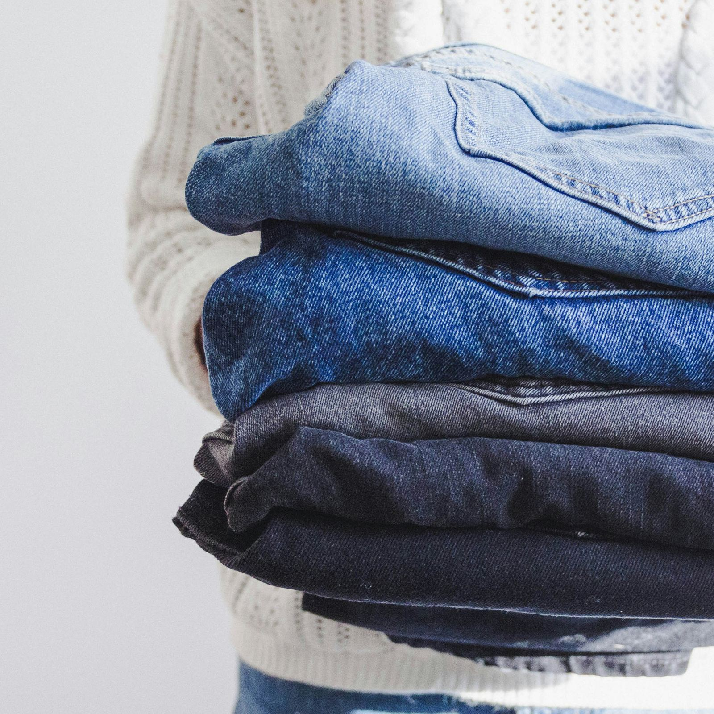

Explore sustainable Italian fashion - luxury meets eco-consciousness. Discover innovative fabrics and ethical practices from top Italian brands. Embrace style with a green touch.
Esplora la moda sostenibile italiana - lusso ecosostenibile. Scopri tessuti innovativi e pratiche etiche dai migliori marchi italiani. Abbraccia lo stile con un tocco green!
Nel mondo sempre in evoluzione della moda, l'Italia si distingue non solo per il suo stile ed eleganza, ma anche per il suo impegno verso la sostenibilità. Da eventi glamour a tessuti innovativi, la moda italiana sta guidando il percorso per unire il lusso alla consapevolezza ecologica.
Immagina di partecipare ai primi Green Carpet Fashion Awards al Teatro alla Scala di Milano, dove marchi iconici italiani come Giorgio Armani e Prada mostrano la loro dedizione alla moda sostenibile. Questo evento ha segnato un cambio significativo verso pratiche ecologiche nella scena globale della moda.
Con le preoccupazioni ambientali al centro dell'attenzione, l'industria della moda sta rivalutando il suo impatto. La fast fashion, nota per il rapido turnover e i prezzi bassi, spesso contribuisce allo spreco e al consumismo. Tuttavia, la moda italiana sta dimostrando un percorso diverso, dove la qualità, l'artigianalità e la longevità sostituiscono le tendenze usa e getta.
Il fascino duraturo della moda italiana risiede nella sua ricca tradizione di artigianato e attenzione ai dettagli. Ogni pezzo sprigiona passione e competenza, garantendo un'eleganza senza tempo. Dai materiali pregiati alla sartoria impeccabile, la moda italiana privilegia la qualità rispetto alla quantità.
Start-up innovative stanno trasformando materiali non convenzionali in oro moda. Immagina giacche di marmo e borse di legno, creando pezzi eleganti e sostenibili. Dal caseina (derivata dal latte in eccedenza) alle fibre di scarto di arance, i pionieri della moda italiana stanno ridefinendo l'industria.

Case di moda di lusso come Gucci e Prada stanno guidando il cambiamento verso la sostenibilità. Il portale Equilibrium di Gucci e il progetto Re-Nylon di Prada incarnano questo impegno, utilizzando materiali riciclati ed eliminando le pellicce dalle collezioni. Questi passi audaci fissano nuovi standard per il lusso etico.
La moda italiana non è solo questione di stile; è una questione di responsabilità. Abbraccia la sostenibilità e offre una visione del lusso che è sia affascinante che etica. Insieme, celebriamo la moda su un green carpet—dove l'eleganza incontra l'etica ambientale.
fonte: Sustainable fashion: the Italian fashion effort in a changing world
Parole chiave
| Moda | Stile o tendenza popolare nel vestiario e nell'abbigliamento. |
| Sostenibile | Che si può mantenere nel tempo senza danneggiare l'ambiente. |
| Lusso | Qualità di oggetti o esperienze molto piacevoli e costosi. |
| Ecosostenibile | Che rispetta l'ambiente e utilizza risorse rinnovabili. |
| Tessuti | Materiali usati per creare abiti e altri prodotti tessili. |
| Etiche | Relativo a principi morali o comportamenti corretti. |
| Marchi | Aziende o produttori noti per la loro identità e qualità. |
| Italiana | Relativo all'Italia o proveniente dall'Italia. |
| Scopri | Trovare o conoscere qualcosa per la prima volta. |
| Abbraccia | Accogliere o adottare qualcosa con entusiasmo. |
| Eleganza | Raffinatezza e grazia nel modo di vestire o comportarsi. |
| Innovativi | Che introduce qualcosa di nuovo o originale. |
| Pratiche | Modi o abitudini di fare le cose. |
| Riciclati | Materiali che sono stati utilizzati precedentemente e poi riutilizzati. |
| Pionieri | Persone o aziende che introducono nuove idee o concetti. |
| Esplorare | Viaggiare o investigare per scoprire qualcosa di nuovo. |
| Stile | Maniera di fare o presentare qualcosa, in particolare nel vestiario. |
| Tendenze | Direzioni o modi popolari che cambiano nel tempo. |
| Qualità | Caratteristiche positive o standard di eccellenza di un prodotto. |
| Iconici | Simboli o rappresentazioni riconoscibili e distintive. |
| Ambientale | Relativo all'ambiente o agli effetti sull'ambiente. |
| Pregiato | Di grande valore o qualità. |
| Sviluppo | Progresso o miglioramento nel tempo. |
| Risorse | Mezzi o materiali disponibili per l'uso. |
| Impegno | Dedizione o coinvolgimento verso un obiettivo o una causa. |
| Osservare | Guardare attentamente o notare qualcosa. |
| Esperienze | Eventi o situazioni vissute che influenzano la conoscenza o le emozioni. |
| Eco-friendly | Amichevole all'ambiente; che non danneggia l'ecosistema. |
Esercizio
Domande
- Quali stilisti famosi hanno partecipato alla prima edizione dei Green Carpet Fashion Awards?
- Quali sono alcuni esempi di nuovi materiali usati nella moda sostenibile italiana?
- Perché l'articolo dice che è importante per le aziende di moda adottare pratiche sostenibili?
- Quali marchi di lusso italiani stanno facendo sforzi per diventare più sostenibili?
- Cosa ha vinto Valentino ai Green Carpet Fashion Awards che lo ha reso notevole nell'ambito della moda sostenibile?